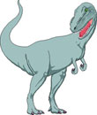
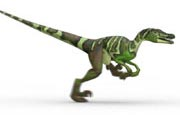
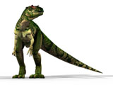
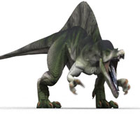
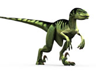
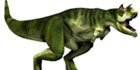

When I was small I really liked dinosours.
So today I am making a web page about dinosours.
Dinosours are very intresting creatures to learn about.
Fun fact about them that they are a species of lizard.
|  | Tyrannosaurus rex is possibly the most well known dinosaur due to its huge size, ferocious nature and regular appearances in popular media. Thanks to a number of well preserved fossils, the T-Rex has been studied in detail by paleontologists all around the world. |
|  | Enjoy our Velociraptor facts for kids and learn a wide range of interesting information about this popular dinosaur. Although it featured some nasty looking claws, the Velociraptor was actually a lot smaller than it was portrayed in the movie Jurassic Park, more the size of a turkey than a human. Read on to find out where their fossils have been found, which NBA team is named after them and more. |
|  | Check out our cool Allosaurus facts for kids. The Allosaurus was a large dinosaur that lived around 150 million years ago. It was a carnivore with big, sharp teeth and there is even evidence to suggest that it attacked the much heavier Stegosaurus. Read on to find out more interesting information about what the Allosaurus looked like, where its fossils have been found, what its name means and much more. |
|  | The name Spinosaurus refers to the huge spines that grew from its back, reaching over 1.5 metres (5 feet) in length. Read on to find out more interesting information about the Spinosaurus, including when it lived, where its first fossils were found and how much it weighed. |
|  | The Deinonychus was part of the same dinosaur family as the Velociraptor, featuring a large claw on its hind feet and around the same bite force as an alligator. |
|  | With a name like Carnotaurus you might have guessed that this dinosaur was a meat eater, it also weighed around 2000 kg and had unique eyes that faced forward, rather than to the side like most other dinosaurs. Read on and enjoy more facts and information about the Carnotaurus. |